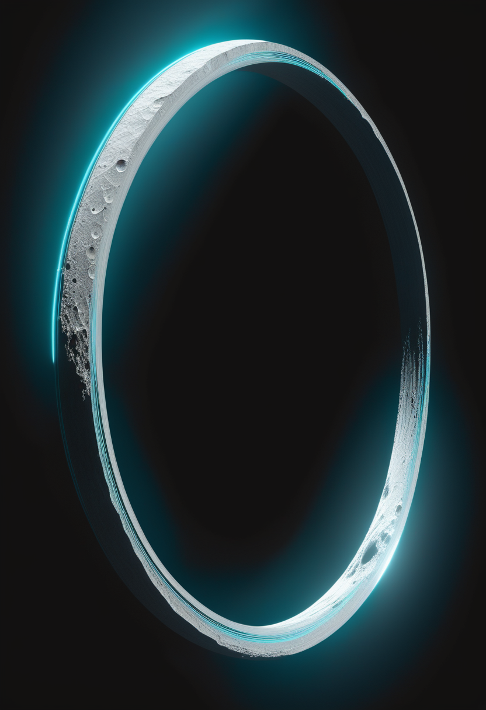
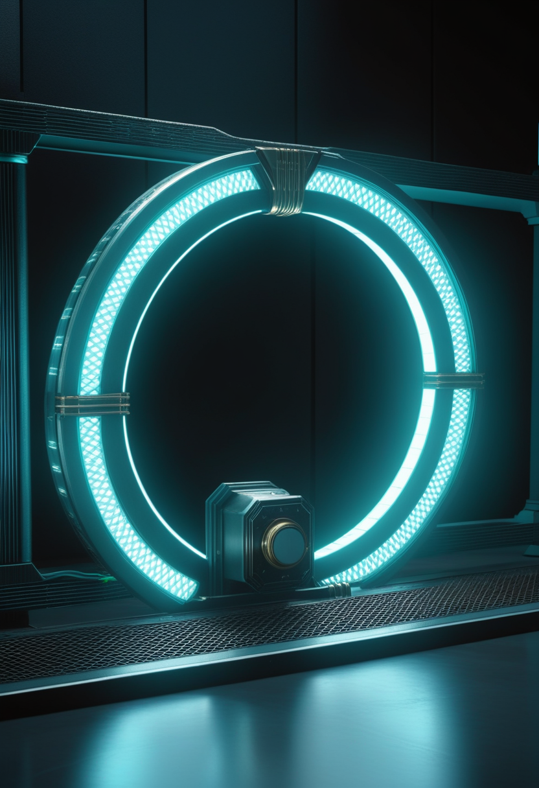
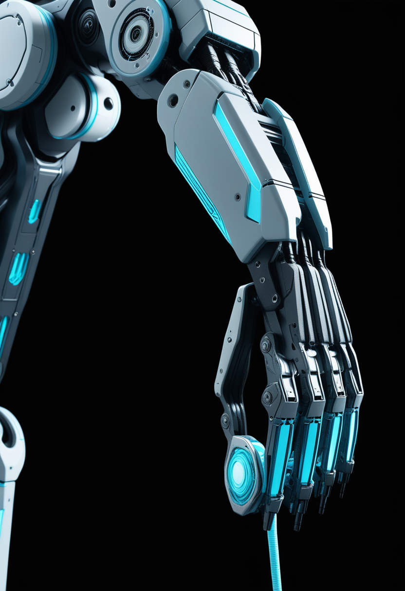
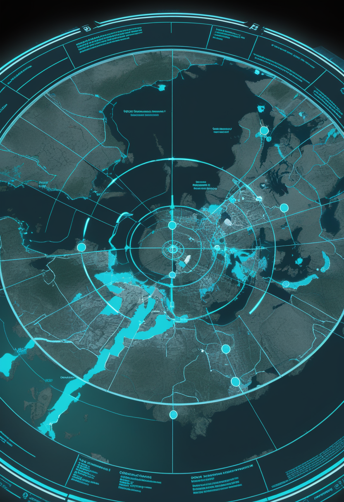
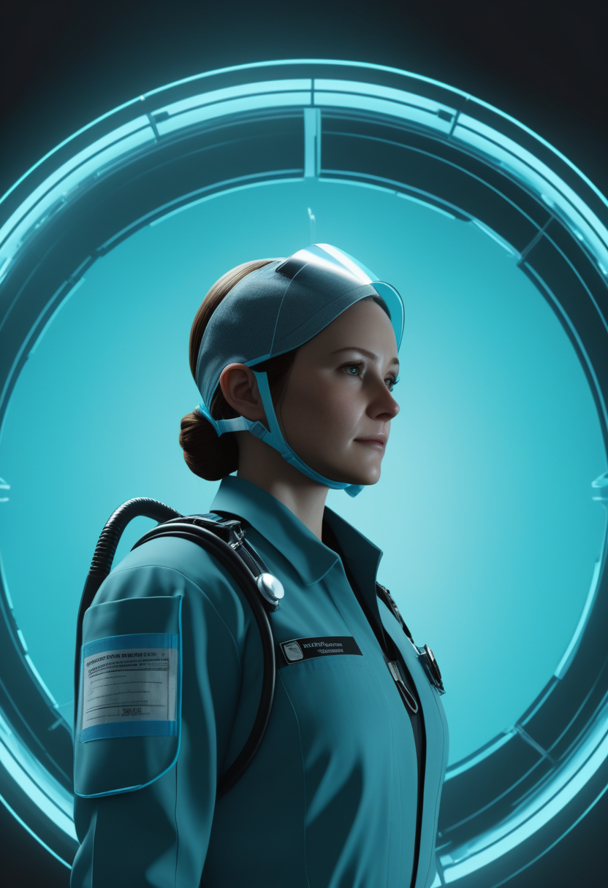
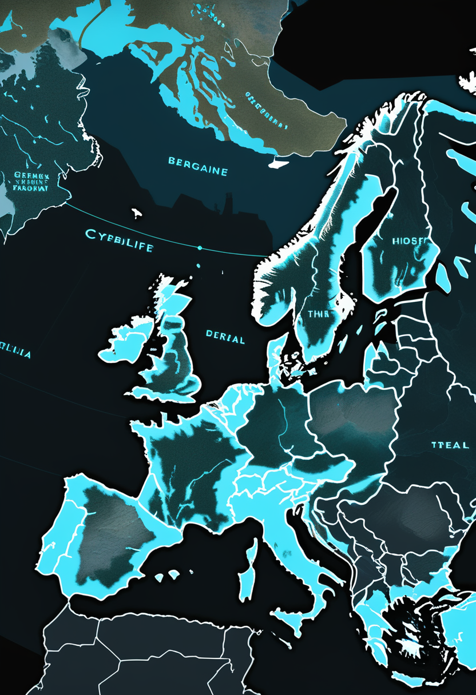
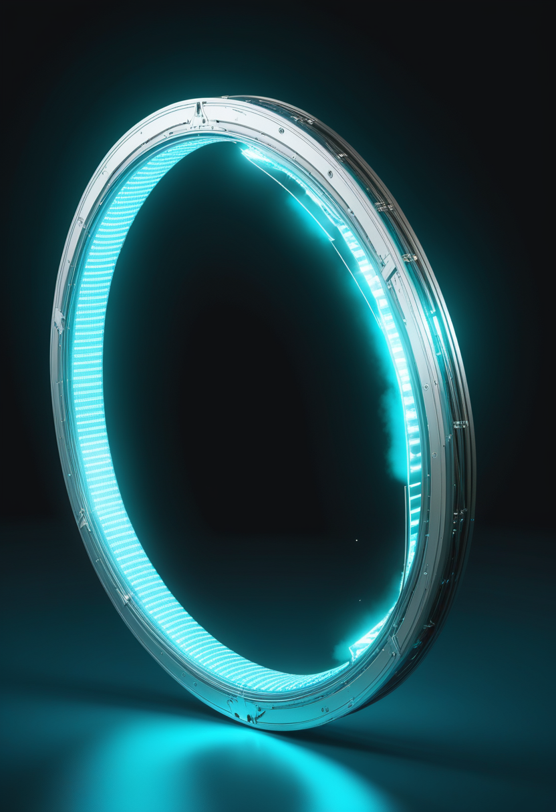
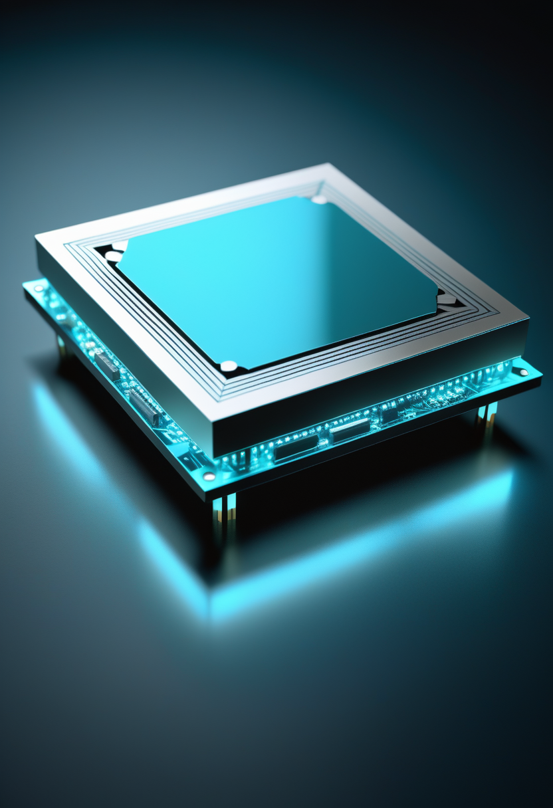
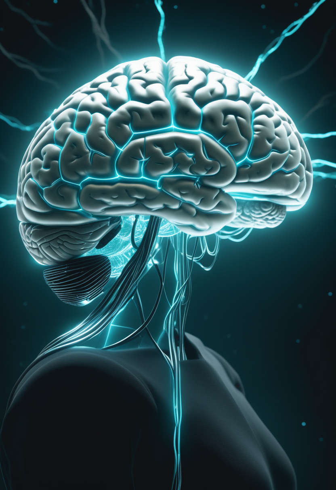

2027年に月軌道を目指すArtemis IIIのクルーが全員男性4名と発表され、NASA長官が釈明を余儀なくされた。同じ週に、LHC Run 3の最終衝突が完了し「物質が反物質より多い理由」への新たな手がかりが生まれ、AI視線技術が自閉症を85%の精度で識別し、DRCのエボラは676例・136名に達した。前進は、問いを抱えながらも止まらない。
2026年6月9日、NASAはArtemis IIIミッションのクルー4名を発表した。Randy Bresnik司令官（NASA、宇宙歴149日）、Luca Parmitano操縦士（ESA、ISS長期滞在2回）、Frank Rubio（NASA、米記録371日ISS滞在）、Andre Douglas（NASA、初飛行）。2027年出発予定のこのミッションは月軌道へ向かい、SpaceXとBlue Originの商業月着陸船2機を検証する——Artemis IV（2028年有人月面着陸）への前哨と位置付けられている。全員男性の人選はNASA長官が公式に弁明を余儀なくされ（6/10〜11）、「女性・多様性を月に送る」という従来の方針との整合性が問われた。Artemis IVにおける人的多様性の実現が焦点となる。
MDA 2026学術集会で発表されたSAPPHIRE第3相試験（非歩行性SMAタイプ2/3、2〜21歳）の結果：主要評価項目のHFMSE（Hammersmith Functional Motor Scale Expanded）で+1.8点の統計的に有意な改善を達成。新解析では治療を早期に開始した群でモーター機能改善が最大となることが確認された。既存のSMN補充療法（ヌシネルセン・リスジプラム）との併用で安全性が維持されており、「SMN標的＋ミオスタチン阻害」の2層アプローチが2型・3型SMAの新たな標準療法候補として固まりつつある。

Scholar Rockのアピテグロマブ（SMAタイプ2・3向けミオスタチン阻害薬）のBLAをFDAが受理し、審査期限（PDUFA date）を2026年9月30日に設定した。CRLの原因は製造施設（Catalent/Novo Nordisk）の査察指摘であり、薬剤本体の有効性・安全性への懸念はない。承認された場合、Scholar Rockは米国内での年内市場投入を目指す。ロシュ・エムグロバルト中止（6/12号既報）によりミオスタチン阻害クラスの唯一の残存候補として残り107日に臨む。
PDUFA まで107日。SAPPHIREの早期開始効果が確認され、「SMN＋筋標的」2層アプローチの第1弾が秋に承認を迎えようとしている。
ACM主催の国際眼球運動・視線追跡シンポジウム「ETRA 2026」が6月1〜4日、モロッコのマラケシュで開催された。系統的レビューとメタ解析により、機械学習モデルと視線追跡技術の組み合わせが自閉症スペクトラム障害（ASD）と定型発達児を約85%の精度で識別できることが示された。眼球運動の微細パターンが神経発達の指標として機能することを大規模に実証した知見群であり、早期診断の標準化と早期介入への応用が視野に入る。
Tobii Technologyが視線操作型発話生成デバイスの新ラインナップ「I-Series」を発表した。脳性麻痺・ALS・多発性硬化症などで身体機能が重度制限された個人に向け、より直感的な視線操作インタフェースと高い表現精度を提供する。非言語で外界と交信できない人々の自己表現能力を拡大するデバイスとして市場に投入される。ETRA 2026でのASD診断研究と合わせ、視線追跡の医療応用が診断・コミュニケーション支援の両輪で加速している。

Neuralink創業者イーロン・マスクが2026年内に高量産体制と「ほぼ完全自動化された手術システム」への移行を発表。新術式では電極スレッドが硬膜（脳保護膜）を貫通するため硬膜剥離が不要となり、侵襲性と手術時間が大幅に削減される見込み。Series E 6億5,000万ドルを調達し、商用化への現実的見通しは2028〜2030年。ETRA 2026でのASD診断（非侵襲系）とTobiiデバイス刷新が並進するなか、侵襲・非侵襲の両軸でBCI競争が2026年後半に本格化する。
視線追跡がASD診断85%・コミュニケーション支援・BCI競争の3層で同時加速 ── 「目で世界を動かす」技術の射程が静かに広がっている。

ECDC報告（6月12日）でブンディブギョ型エボラの感染者数は676例・死亡136名・入院中262名（6/10時点）に更新された。地域別ではイトゥリ州629例（19保健区）が最多で、北キブ州44例・南キブ州3例が続く。ウガンダは確定19例・死亡2名で6月5日以降の新規感染はゼロ。WHOが目標とする接触追跡率90%に対し実態は約45%にとどまり、感染連鎖の遮断が依然として最重要課題となっている。承認ワクチン・特異的治療薬ともに存在しないPHEIC下での封じ込めは続く。

6月5日、WHOとAfrica CDCは5億1,800万ドルのアフリカ大陸準備・対応計画を始動させた。一方、国際看護師会（ICN）は6月3日「DRCの看護師はPPEと検査キットの不足により自身の安全を恐れている」と声明を発表し、医療従事者保護の強化を国際社会に要請した。米国の2.2億ドル緊急拠出（6/13号既報）との連動で資金の枠組みは整いつつあるが、現場への物資調達・「ラストマイル」の人材配置が根本的な障壁として残る。

エボラ対応と並行し、DRCでは2026年通算2万6,750例・783死亡のコレラが進行中（5/11時点、WHO DON606）。ブラジルでは2026年計11確定例・6死亡の黄熱病が報告されており（6/1時点）、同国の黄熱ワクチン接種率の地域格差が改めて問われている。エボラへの国際的な注目が集まる中、その陰に重なる多重流行が公衆衛生資源を複数方向に引き延ばしている。
676例・接触追跡45% ── 5億ドルの資金が動いても現場のPPEと人材が追いつかない。エボラの陰でコレラと黄熱が静かに燃え続けている。
6月9日、NASAはArtemis IIIのクルーを発表した：Randy Bresnik司令官（宇宙歴149日）、Luca Parmitano操縦士（ESA・ISS長期滞在2回）、Frank Rubio（米記録371日ISS滞在）、Andre Douglas（初飛行）。ミッションは2027年に月軌道へ出発し、SpaceXとBlue Originの商業月着陸船2機をテストする前哨任務を担う。全員男性の人選にNASA長官は釈明を余儀なくされ（6/10〜11）、2028年有人月面着陸（Artemis IV）での女性・多様性登用方針との整合性が改めて問われた。50年ぶりの月近傍有人飛行に向け、技術と倫理が同時に試されるミッションとなった。

6月11日午後5時（CEST）、LHCは大型アップグレード（HL-LHC）前のRun 3最終粒子衝突を完了した。同LHCb実験では、バリオン（重粒子）の崩壊率において物質と反物質の間に差異（CP非保存）が初めて直接観測された。「なぜ宇宙は反物質でなく物質で満たされているか」という根本問題に新たな手がかりが加わった。前号（6/13）のチャーミングペンギン崩壊4σ逸脱・二重チャームバリオン発見と合わせ、標準モデルへの多角的な挑戦が積み重なる。HL-LHCフェーズ移行に向けた数年規模の停止期間が始まる歴史的節目でもある。

モナシュ大学の研究チームがScienceDaily（6月1日）に発表したフォトニック量子チップは、原子レベルの薄膜材料とナノ構造で光の「バレー自由度」（量子特性）を制御する。光の生成・誘導・情報読み取りを1枚のチップで完結させたこの設計は、超高速・省エネルギーの量子コンピューターおよびAIアクセラレーターへの重要な一歩となる。従来は複数デバイスに分散していた光処理機能の集積化は、量子コンピューティングの小型化・実用化加速を意味する。
Artemis IIIは2027年の月軌道で人類の問いを試し、LHCはRun 3を終え宇宙の非対称性に新たな光を当て、Monashのフォトニックチップが量子の扉を一枚押し開けた。
MedicalXpress（2026年5月）とSingularity Hub（4月）の報告によると、個人の脳と身体をモデル化したデジタルツインは薬剤への応答・疾患進行・神経刺激反応のシミュレーションが可能な段階に達している。精神科薬の個別最適化や認知症の早期予測への応用が視野に入る一方、研究者は「SFのマインドクローンとは程遠い」とも強調する。医療目的の部分的・機能的モデルとして数十年内の実用化が見込まれ、「段階的な医療ツール化」が最も現実に近い見通しだ。
脳デジタルツインが精神健康リスク・認知特性・将来行動を予測できるようになれば、雇用主・保険会社・政府機関への情報流出が現実的な脅威となる。Singularity Hub（2026-04-11）が指摘するように、現行のプライバシー・同意フレームワークは技術の進歩に追いついていない。欧州AI法との整合性や国際的な認知データ所有権の枠組み形成が急務であり、「誰が、どの範囲で認知予測データを取得できるか」という問いへの制度的回答が存在しないまま研究が加速している。

MindTransfer.me（2025〜2026年分析）によると、2026年初頭時点でシリコン上に完全再現された人間ニューロンはゼロ、意識アップロードの実績もゼロ。「State of Brain Emulation Report」（2025年10月）は全脳エミュレーションを最低でも30〜40年先と結論づけた。Gizmodoは「AI模倣脳がマインドアップロードへの道を拓くか」と問い、ショウジョウバエ全脳シミュレーション（仮想歩行成功）を原初形態として論じる。「段階的医療ツール」（05.1）と「理想としての全脳エミュレーション」の間に横たわる30〜40年の地平は、今日も変わらない。
脳のデジタル双子は「5〜10年内の医療ツール」と「30〜40年先の全脳エミュレーション」の間にある ── 倫理の枠組みが技術を追い越す前に整う日は来るか。
今日の世界は、月へ向かう4人の名前を覚えながら、DRCの676例に向き合い、1枚のフォトニックチップに量子の夢を込め、視線だけで85%の診断精度を叩き出す研究者の目を追っていた。Artemis IIIが問いを月軌道に運ぶとき、誰が乗るかもまた人類の問いになる。LHCが止まり、脳のデジタル双子が歩み始め、SMAの子どもたちへの薬の審査が秋に向かう。前進は、問いを抱えながらも止まらない。
明日への短い便り。今日も世界は、問いながら回っていました。おやすみなさい。